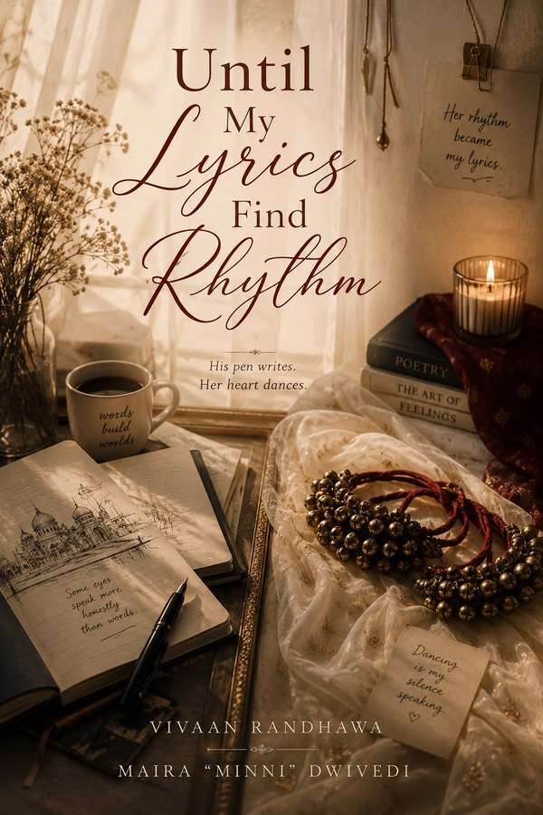

Until My Lyrics Find Rhythm
He writes what he cannot say. She dances what she cannot explain.
A slow-burn royal romance of contract marriage, hidden dreams and quiet healing
Read on WattpadHe was raised to inherit a throne. She was raised to trust the people who protected her. Neither was prepared for what marriage would ask of them.
Vivaan Randhawa is the heir to one of Rajasthan’s most influential Rajput royal families. At twenty-five, he has mastered everything expected of a future king: composure, responsibility, strategy, and the ability to smile while an entire room hides its intentions. What nobody knows is that behind the palace doors, the prince has a world of his own. A pen. A sketchbook. A collection of words he never says aloud. And dreams that have nothing to do with a throne.
Maira “Minni” Dwivedi is almost his opposite. A quiet, gentle Chartered Accountant, Minni has grown up surrounded by a family that loves her fiercely and protects her from the harsher corners of the world. She trusts her father completely, speaks little, observes everything, and carries a secret of her own.
When their families arrange a marriage, neither expects love. Theirs is supposed to be simple. A marriage with a purpose. A year. A promise. And then they can return to the lives they had planned. But palaces have a way of turning simple things complicated. Behind the grandeur are old rivalries, family expectations, unspoken promises, guarded secrets, and people who know exactly how to hide their intentions behind a smile.
And somewhere between all of that are two people who slowly begin discovering the versions of themselves they never had the courage, or freedom, to show the world. He discovers that the quiet girl beside him has a rhythm of her own. She discovers that the man everyone sees as a perfect prince carries an entire universe behind his silence. He writes what he cannot say. She dances what she cannot explain. And without either of them realizing when it happened, the distance between a husband and wife begins to disappear.
Because sometimes love doesn’t arrive with grand declarations. Sometimes it arrives as someone remembering how you take your tea. A hand held a little longer. A sketch left unfinished. A pair of ghungroos heard from behind a closed door. A homemade sweet packed into a box. A father-in-law who slowly becomes a father. A palace that begins to feel less like a kingdom and more like home.
Neither was taught what to do when they became each other’s home.
Meet them
- Vivaan Randhawa. The perfect prince, with a pen, a sketchbook and an entire universe behind his silence.
- Maira “Minni” Dwivedi. A gentle Chartered Accountant who says little, sees everything, and has a rhythm all her own.
Because sometimes the most beautiful stories are not written. They are found. One line at a time. One rhythm at a time.